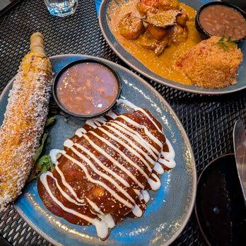
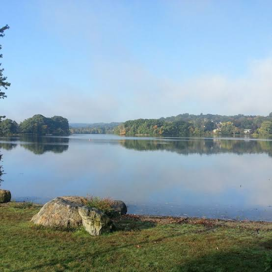
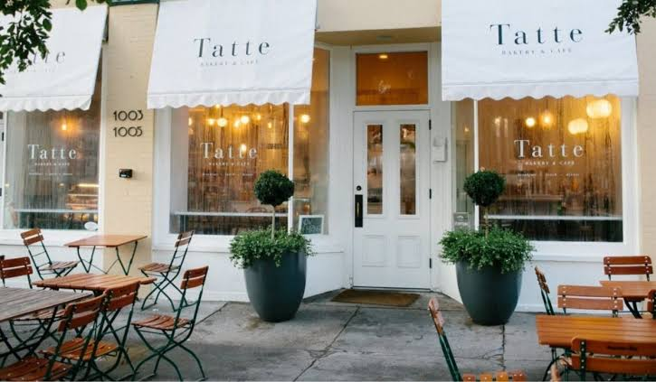
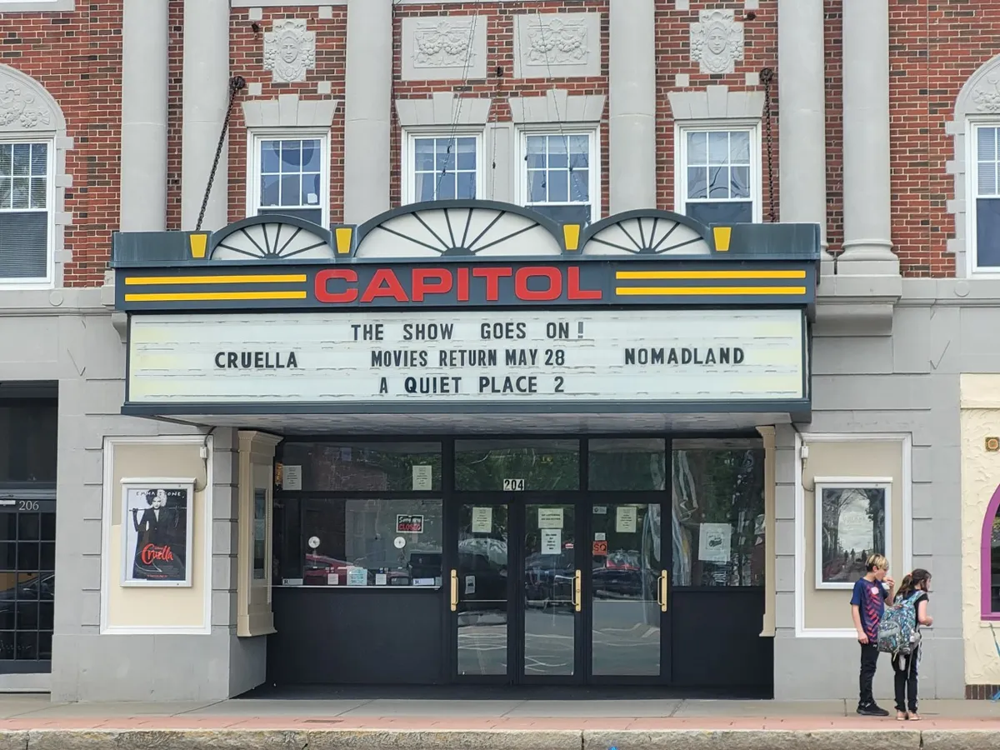

This is where I live in Middlesex County! I love my town, whether its the people, the restaurants/food places, or how close it is to the city of Boston. It is definitely worth the visit, but if you are in Boston and don't have that much time, honestly stay in Boston, the city is better.
Amazing Mexican food, my friends come from all over to try it! Highly recommend.

You can take kayaks, canoes, or sailboats (I have taken my sailboat on the pond!) in the pond, or just go for a walk along the pond! Great walks and stopping points with a park

My favorite place to get breakfast/lunch! Great coffee, and chocolate croissants.

Great old movie theatre, a staple in my town. I have been going here since I was a kid. Awesome movies and there is an ice cream shop on the inside.
